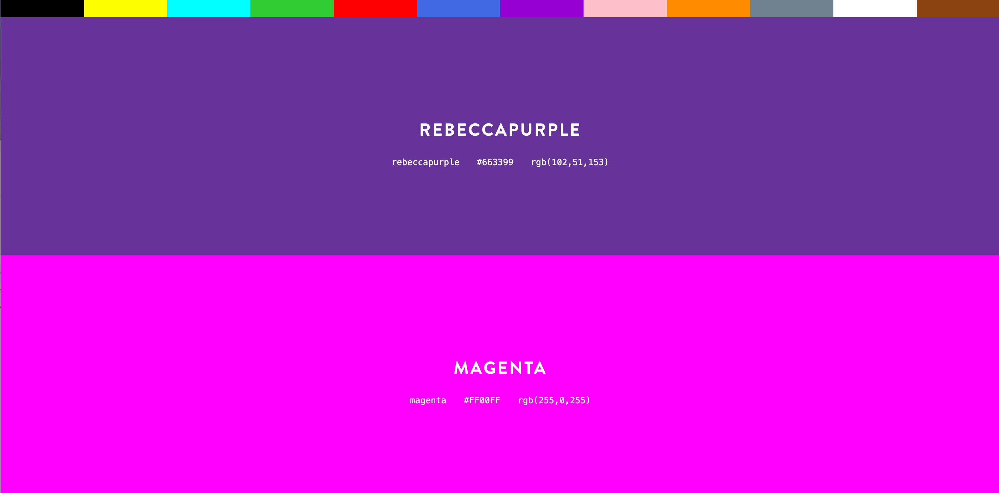
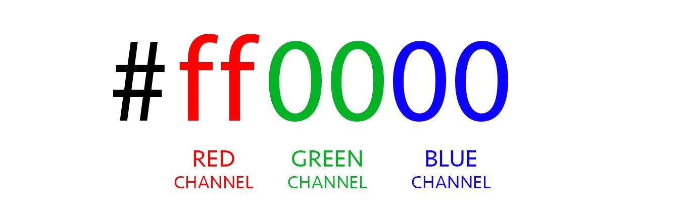
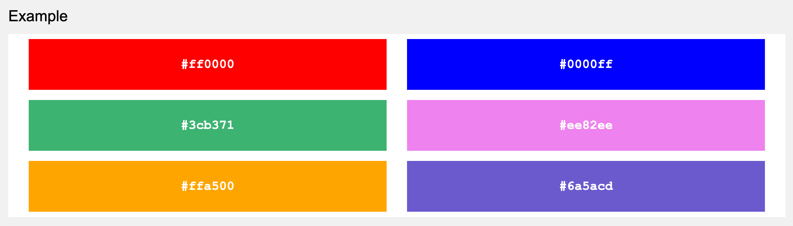
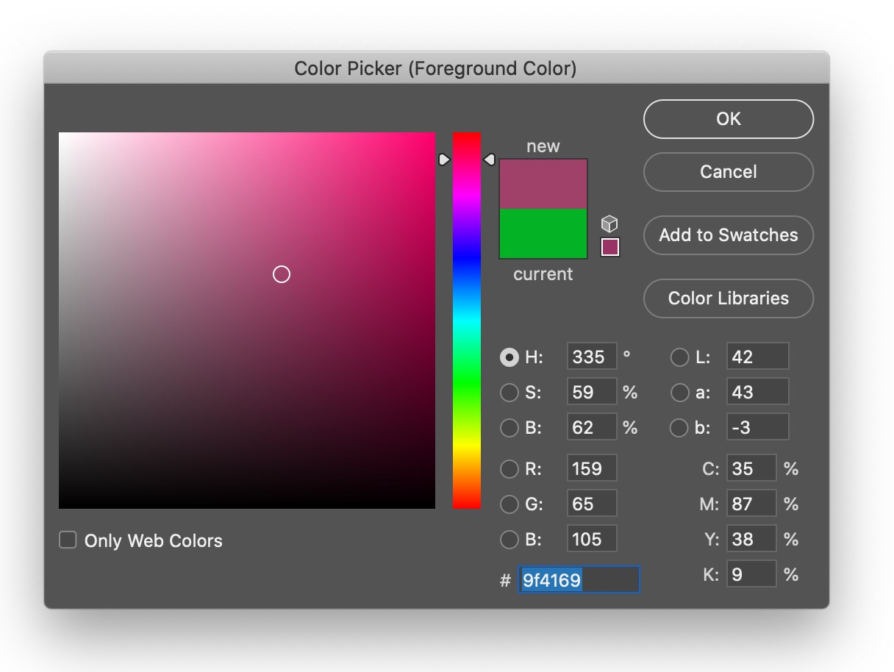
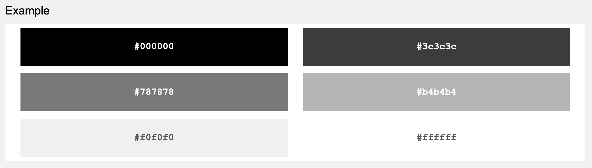
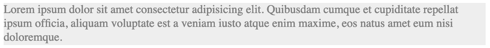
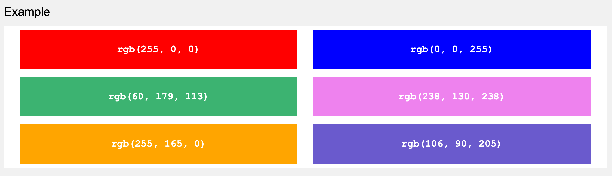
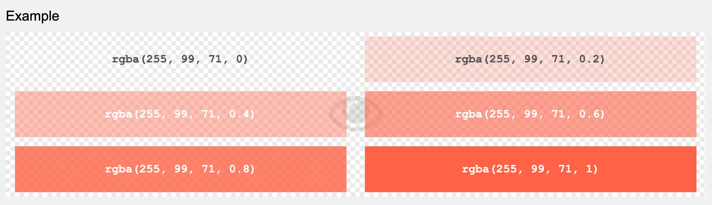

Two weeks of plain HTML is enough. This week the pages you have already built get colour, typography and links that respond to the mouse. You'll work in one shared stylesheet from the start, learn the Styles panel in dev tools, and begin Portfolio Task 3.
This session
- What CSS is and how it reaches your page
- Selectors: elements and classes
- Colour, and keeping it in one place with custom properties
- Typography and Google Fonts
- Break
- The Styles panel and checking contrast
- Styling links: hover, focus and transitions
- Exercise: Styling Vancouver
- Portfolio Task 3: Leeds attractions, built for a phone
Introduction to CSS
What is CSS?
CSS stands for Cascading Style Sheets. While HTML provides the structure and content of your webpage, CSS is what makes it look good. Think of HTML as the skeleton of a house, and CSS as the paint, wallpaper, and interior design.
The Power of CSS: CSS Zen Garden
Visit CSS Zen Garden to see the true power of CSS. This site shows the exact same HTML content styled in hundreds of completely different ways - from elegant and minimal to bold and artistic.
Click through different designs and notice how the content stays identical, but CSS creates entirely different visual experiences. This demonstrates what you'll be able to achieve as your CSS skills develop!
CSS allows you to control:
- Colours - text colour, background colours
- Typography - fonts, sizes, spacing
- Layout - positioning and spacing of elements
- Visual effects - shadows, borders, gradients
How CSS reaches your page
CSS lives in a separate file with a .css extension,
and your HTML page links to it from the <head>:
<head>
<meta charset="UTF-8">
<meta name="viewport" content="width=device-width, initial-scale=1.0">
<title>All about me</title>
<link rel="stylesheet" href="styles.css">
</head>
The href is a relative path, exactly like an image or
a link. styles.css means "in the same folder as this
HTML file".
One stylesheet for the whole site
Every page in your skills-portfolio folder links to the
same styles.css. Change a colour
once and every page changes. Last year several students made a
separate stylesheet for every page and lost marks for it, so
this is a rule, not a suggestion.
You will see two other ways of doing it
Tutorials online sometimes put CSS inside a
<style> element in the head (internal
CSS) or in a style="" attribute on a single
element (inline CSS). Both work, both are fine
for a quick experiment in CodePen, and both are the wrong choice
for a real site because the styling gets scattered and can't be
shared. Recognise them; don't use them in your portfolio.
CSS Selectors - Targeting Elements
CSS selectors tell the browser which HTML elements you want to style. The most basic selector is the element selector:
h1 {
color: red;
}
p {
color: blue;
font-size: 18px;
}
strong {
color: orange;
}This CSS will:
- Make all <h1> headings red
- Make all <p> paragraphs blue and 18px in size
- Make all <strong> text orange

Class selectors
Element selectors style every paragraph or every heading. Often you want to single one out, or style a group of things that aren't the same element. For that you give the element a class attribute in the HTML:
<p>This is a normal paragraph.</p>
<p class="pullquote">Every time I view the sea I feel a calming sense of security,
as if visiting my ancestral home.</p>
<p>This is another normal paragraph.</p>and target it in the CSS with a full stop before the class name:
.pullquote {
color: orange;
font-size: 1.3rem;
}This is a normal paragraph.
Every time I view the sea I feel a calming sense of security, as if visiting my ancestral home.
This is another normal paragraph.
The same class can go on as many elements as you like, and an
element can carry several classes separated by spaces. Class names
follow the same rules as file names: lower case, hyphens, no
spaces, and descriptive (dont-miss, not
dm).
You will also see #id selectors
An id attribute is like a class that may only be used
once per page, and it's what same-page links jump to. You can
style with #some-id too, but don't: classes do the
same job and are far easier to manage. Specificity, which
comes later, explains why.
Adding Comments to Style Sheets
Comments are extremely helpful as an organisational tool. Style sheets can quickly get long, so organising them is critical to making your CSS easy to evolve and maintain. It's common practice to group related rules together and precede each with a descriptive comment.
To add comments to style rules
- In your style sheet, type /* to begin your comment.
- Type the comment. It doesn't matter if this spans multiple lines.
- Type */ to signal the end of the comment.
For big sections in my CSS, e.g. for all the CSS rules to style text I tend to make comments that are easy to see using a lot of hyphens to make it obvious where these start and end.
/* ==========================================
GLOBAL NAVIGATION
========================================== */
nav {
/* CSS rules for global nav would go here */
}
/* ==========================================
MAIN CONTENT
========================================== */
h1 {
/* CSS rules for content headings */
}Professional Practice
Adding comments to your CSS makes it easier to find and update styles later, especially as your stylesheets grow. Get into the habit of commenting your code early - it's a sign of a professional developer!
Working with Colours
CSS offers several ways to specify colours. Let's start with the most common methods:
Named Colours
CSS has 140 named colours you can use directly:

h1 {
color: red;
background-color: lightblue;
}
p {
color: darkgreen;
background-color: lightyellow;
}This heading uses named colours
This paragraph also uses named colours
CSS Spelling
Annoyingly for British web developers we have to adopt the American spelling of some words for CSS. The most common ones are color for colour and using z's instead of our traditional s's for words like "capitalize".
Hex Colours
Hex colours give you precise control over colours using a 6-digit code:
h1 {
color: #ff6600; /* Orange */
background-color: #f0f8ff; /* Light blue */
}
p {
color: #333333; /* Dark gray */
background-color: #ffffff; /* White */
}This heading uses hex colours
This paragraph uses hex colours


Colour picker tools
Use online colour pickers to find the perfect hex codes for your designs:

Changing the Background Colour of Your Entire Page
To change the colour of the page background we still use the background-color property. We just need to target this rule at the body element of the HTML.
The CSS code below shows this in action:
body {
background-color: #eee;
}This demonstrates how the body background-color affects the entire page


RGB and RGBA Colours
RGB colours work like hex codes but use decimal numbers (0-255) for red, green, and blue values. RGBA adds an alpha channel for transparency, where 0 is fully transparent and 1 is fully opaque.
h1 {
color: rgb(255, 102, 0); /* Orange */
background-color: rgb(240, 248, 255); /* Light blue */
}
p {
color: rgba(0, 0, 0, 0.8); /* Black with 80% opacity */
background-color: rgba(255, 255, 255, 0.5); /* White with 50% transparency */
}

Keeping your colours in one place
A site usually has three or four colours that appear again and
again. Typing #ff6600 in twenty places works until you
want to change it. CSS lets you name a value once and reuse it,
using a custom property (most people say "CSS
variable"):
:root {
--brand: #ff6600;
--ink: #222222;
--paper: #fffaf3;
}
body {
background-color: var(--paper);
color: var(--ink);
}
h1,
h2 {
color: var(--brand);
}
a {
color: var(--brand);
}
:root is a selector for the whole document, so
anything declared there is available everywhere. Custom property
names start with two hyphens, and you use them with
var(). Change --brand at the top of the
file and every heading and link follows.
Do this from the start of every stylesheet
Put your palette in :root at the top of
styles.css before you write anything else. It makes
your CSS shorter, it makes changing your mind cheap, and it is
the single habit that most separates tidy stylesheets from messy
ones.
Typography with CSS
Typography is crucial for making your websites readable and attractive. Here are the essential CSS properties for text styling:
Font Family
The font-family property controls which typeface is used for your text. You can specify multiple fonts as fallbacks in case the first choice isn't available on the user's device. Always end with a generic font family (like sans-serif or serif) as a final fallback.
h1 {
font-family: Arial, sans-serif;
}
p {
font-family: Georgia, serif;
}Font Size - Flexible Measurements
While you can use pixels (px) for font sizes, it's better to use elastic measurements that can scale with user preferences. There are three main units to choose from:
Pixels (px) - Fixed Size
Pixels give you exact control but don't scale. If a user has vision difficulties and increases their browser's base font size, pixel-based text won't grow to accommodate them.
h1 {
font-size: 36px; /* Always 36 pixels, never changes */
}Em - Relative to Parent Element
The em unit is relative to the font size of its
parent element. This means 2em will be twice the size
of whatever the parent element's font size is. While flexible, this
can get complicated because ems compound - an element inside an
element can multiply the sizing unexpectedly.
/* If parent has font-size: 16px */
h1 {
font-size: 2em; /* 2 × 16px = 32px */
}
/* Problem: Nested ems multiply */
div {
font-size: 1.5em; /* 24px if parent is 16px */
}
div p {
font-size: 1.2em; /* 1.2 × 24px = 28.8px (not 1.2 × 16px!) */
}Rem - Relative to Root Element (Recommended!)
The rem unit (root em) is relative to the root
element (<html>), typically 16px by default. This
means 2rem is always 2 times the root font size,
regardless of parent elements. This makes sizing more predictable
and manageable.
/* Root element (html) default is 16px */
h1 {
font-size: 2rem; /* 2 × 16px = 32px */
}
h2 {
font-size: 1.5rem; /* 1.5 × 16px = 24px */
}
p {
font-size: 1rem; /* 1 × 16px = 16px */
}
/* Rem doesn't compound - always relative to root */
div p {
font-size: 1.2rem; /* 1.2 × 16px = 19.2px (predictable!) */
}Why Rem is Better Than Em
Predictability: Rem always calculates from the same base (the root element), while em can compound and become difficult to track through nested elements.
Accessibility: Both em and rem scale when users adjust browser settings, but rem is easier to maintain because you always know what the base size is.
Consistency: Using rem throughout your site ensures all sizing is relative to one consistent base, making it easier to create harmonious typography scales.
Best Practice: Modern web development favours rem for most sizing, reserving em for specific cases where you want sizing relative to the parent (like padding/margin within a component).
Font Size Guidelines
h1 {
font-size: 2.5rem; /* Large main heading */
}
h2 {
font-size: 2rem; /* Section headings */
}
h3 {
font-size: 1.5rem; /* Sub-section headings */
}
p {
font-size: 1rem; /* Body text (browser default) */
}Font Weight
h1 {
font-weight: bold;
}
p {
font-weight: normal;
}
.light-text {
font-weight: 300;
}Complete Typography Example
h1 {
font-family: Arial, sans-serif;
font-size: 2.5rem;
font-weight: bold;
color: #2c3e50;
}
p {
font-family: Georgia, serif;
font-size: 1rem;
font-weight: normal;
color: #34495e;
line-height: 1.6;
}
body {
background-color: #f8f9fa;
padding: 20px;
}Professional Heading Style
This paragraph demonstrates professional typography with scalable measurements. The text will grow or shrink if users adjust their browser's font size, making it more accessible.
Building a Complete Design
Notice how combining colours, scalable typography, and spacing creates a cohesive, professional look that adapts to user preferences. After the break we'll look at links and how to style them to match.
Adding Google Fonts
If you don't want to be restricted to using the default fonts installed on someone's computer you can link to an online font service like Google Fonts. This links to fonts hosted online and downloads them so the page can use them when it is browsed.
This video explains how:

Key Steps for Using Google Fonts
After watching the video:
- Browse and select fonts from fonts.google.com
- Copy the <link> code to add to your HTML <head>
- Use the font-family name in your CSS
CodePen Exercise 1: Style Your About Me Page
Purpose: Practice basic CSS styling with colors and typography
In CodePen, you'll see the HTML already provided. Add your CSS in the CSS panel:
/* Add your CSS in the CSS panel */
h1 {
/* Change the h1 color to blue */
}
h2 {
/* Make h2 headings orange (#ff6600) */
}
p {
/* Change font family to Georgia, serif */
}Your Tasks:
- Change the colour of the h1 heading to blue
- Make the h2 headings orange (#ff6600)
- Change the font family for paragraphs to Georgia, serif
- Add a light gray background colour to the page (#f5f5f5)
- Make the contact text bold using font-weight
Break
Halfway
After the break: the dev tools panel that shows you your CSS, then links that react.
The Styles panel
Last week you met the Elements panel. Sitting next to it (below it on a narrow window) is Styles, and it shows every CSS rule that applies to whatever element you have selected, which file and line it came from, and which declarations have been overruled (struck through).
Why this matters
- "My CSS isn't working" nearly always means the rule isn't reaching the element. Styles shows you immediately whether the browser has your rule at all, and if not, the stylesheet link is wrong.
- You can edit values live. Click a colour, drag a number, tick a property on and off. Nothing is saved, so it is a free place to try ideas before you type them into the file.
-
The colour picker shows contrast. Click the
little colour swatch next to any
colorvalue and the picker reports the contrast ratio against the background and whether it passes AA. Body text needs 4.5:1; big headings need 3:1.
Try it now
- Inspect a link on this page.
-
In Styles, find the rule for
aand click the colour swatch. Read off the contrast ratio. -
Tick the
colordeclaration off and on. Change the hex value. Reload to get the original back.
From now on, before you settle on a text colour and a background, check the pair. Pale grey on white looks refined and fails. A standalone checker such as WebAIM's contrast checker does the same job outside the browser.
Styling links
Styling Links with CSS
By default, links appear blue and underlined. You can customise their appearance with CSS:
Basic Link Styling
a {
color: #0066cc; /* Blue color */
text-decoration: none; /* Remove underline */
font-weight: bold; /* Make text bold */
}Hover Effects
Use the :hover pseudo-class to change link appearance when users hover over them:
a {
color: #0066cc;
text-decoration: none;
font-weight: bold;
font-size: 1.2rem;
}
a:hover {
color: #ff6600;
text-decoration: underline;
background-color: #fff4e6;
}Different Link States
a {
color: #0066cc; /* Normal link color */
text-decoration: none;
}
a:hover {
color: #ff6600; /* Color when hovering */
text-decoration: underline;
}
a:visited {
color: #800080; /* Color for visited links */
}Focus: the state you can't see with a mouse
Plenty of people move through a page with the Tab key rather than a mouse. The link that currently has the keyboard focus needs to be visible, or they are lost. Browsers draw an outline by default; if you restyle links, restyle focus too rather than switching it off:
a:hover,
a:focus {
color: #ff6600;
text-decoration: underline;
}
Press Tab a few times on this page and watch the focus ring move.
Whatever you do to :hover, do to :focus
as well.
Transitions: making the change smooth
A hover effect that snaps from one colour to another feels abrupt. The transition property tells the browser to animate the change over a short time instead. It goes on the element's normal state, not the hover state:
a {
color: #0066cc;
transition: color 0.3s ease;
}
a:hover,
a:focus {
color: #ff6600;
}Hover or tab to this link and watch it ease rather than snap.
You can transition most properties that have a numeric or colour
value: color, background-color,
transform, opacity. Keep it short.
Anything over about half a second starts to feel like waiting.
This module is called Web Interaction; this is the first bit of
interaction, and it needed no JavaScript.
Styling the navigation
Last week your navigation was a plain list of links inside
nav. With a few rules it becomes a menu bar. The list
still stacks vertically for now; laying it out horizontally
comes later.
nav {
background-color: #333;
padding: 10px;
}
nav ul {
list-style: none; /* no bullets */
margin: 0;
padding: 0;
}
nav a {
color: white;
text-decoration: none;
display: block;
padding: 10px 15px;
transition: background-color 0.2s ease;
}
nav a:hover,
nav a:focus {
background-color: #ff6600;
}
nav a is a descendant selector: it
means "links that are inside a nav" and leaves the rest of your
links alone. We'll look at these properly later.
Additional Practice Exercise
Exercise 2 - Styling Vancouver
Purpose: Practice creating an external stylesheet and applying comprehensive CSS styling
Getting Started
Download the zip file in today's tutorial folder and open this in VS Code.
This task is going to draw upon the new CSS we have just covered. Download the Styling Vancouver zip from this week's tutorial folder and open the unzipped folder in VS Code.
The markup is done in the HTML and the images are present in the images folder.
Instructions:
- Create a new external stylesheet in the same folder as the html file and link to it from your HTML.
- To check the link is correct create a new rule to change the background colour of your HTML page to #323746.
- Set all the fonts on the page to be Arial with the CSS font-family: Arial, Verdana, sans-serif; Where would you put this rule so that you only ever had to type it once?
- Set the colour of all paragraph text to be #c8cddc;
- Make the h1 and h2 headings a pale grey (R:232, G:238, B:255, or #e8eeff) by adding new rules (declarations) for these elements.
- Add a new style rule to change h3 titles to the colour #ff9900. Note that because this value has all double digits, you can (and should) use the condensed version (#f90) and save a few bytes in the style sheet.
- Add the rules to the body declaration block of font-size: 100%; margin: 60px;
- Set the font size of the h1, h2 and h3 elements respectively to be 2.25em, 1.8em and 1.5em.
- Set the line height of paragraphs to be 2em.
- Add the following CSS to style the list of links ul{ list-style-type: none; margin: 0; padding: 0; }
- Add some more CSS to turn off the underline of the links a{ padding: 5px; text-decoration: none; }
- Add a declaration to set the background colour of the links to be semi-transparent using the rgba property. Make the background colour black but give it a transparency of 0.3
- Set the link colour (text colour) to be white and the size of the links to be 0.8em.
- Add a pseudo-class to make the background colour of the links go fully black when the mouse cursor rolls over them.
- Add another pseudo-class to turn the text colour of the links the same colour as the h3 elements when they are pressed. Add one more pseudo-class to turn the text colour of the links gray when they have been visited.
- Finally write a couple of comments in your CSS code to organise the code, e.g. highlight which is the code for text, and which for links.
Portfolio Task 3: Leeds attractions, built for a phone
This task runs for three weeks. This week you build the page and style its colours and type; the next two weeks add to it. Build it well now and the later weeks are quick.
You are to build a Leeds attractions guide page designed for a mobile device. You'll be given the text for ten attractions and a folder of images, one per attraction, in the portfolio-task.zip file in this week's tutorial folder.
How do you build a page for a mobile?
More people look at websites on a phone than on a desktop (see the statistics), so making pages work on a phone is essential. Later in the module we'll make one page work on both by changing the CSS. For now, design for the phone only.
Mobile first
Forget what this page looks like on a desktop. Make your browser window narrow when testing, or use the device toolbar in dev tools (the phone icon at the top of the panel) to simulate a phone. On a phone almost everything stacks, which is what block elements do anyway, so this page is simpler than it sounds.
This week's requirements
- Create attractions.html in your skills-portfolio folder. Link it to your shared styles.css. Yes, the same stylesheet as your other pages: that's the point.
-
Add the ten attractions from
leeds-attractions-content.txt. Each one needs a
heading, its paragraph and its image, and they should be wrapped
in a sensible element (an
articleor adiv) with a class ofattraction. -
Resize the images in Photoshop so they are all the
same width and aspect ratio before you put them
in your images folder. Your tutor will show a quick way to batch
this in the online session. Every image needs a useful
alt. -
Add
img { max-width: 100%; height: auto; }to your stylesheet so images never overflow a narrow screen. -
Put a palette of three or four colours in
:rootas custom properties and use them for the page background, text and headings. Check the text and background pair for contrast. -
Choose a Google Font for headings and set body text in
remsizes. -
Mark two or three attractions as Don't Miss by
adding a second class,
dont-miss, and style them so they stand out. -
Give the page a
headerwith a title and anavlinking back to index.html, and afooter. Style the nav links with a hover and focus state and a transition. - Validate the HTML. Then go back to your about-me and business pages, link them to the same stylesheet, and watch them change.
Not yet
Don't worry about padding, margins, borders or centring the page. That comes later, and it is much easier to add to a page whose colours and type are already right.